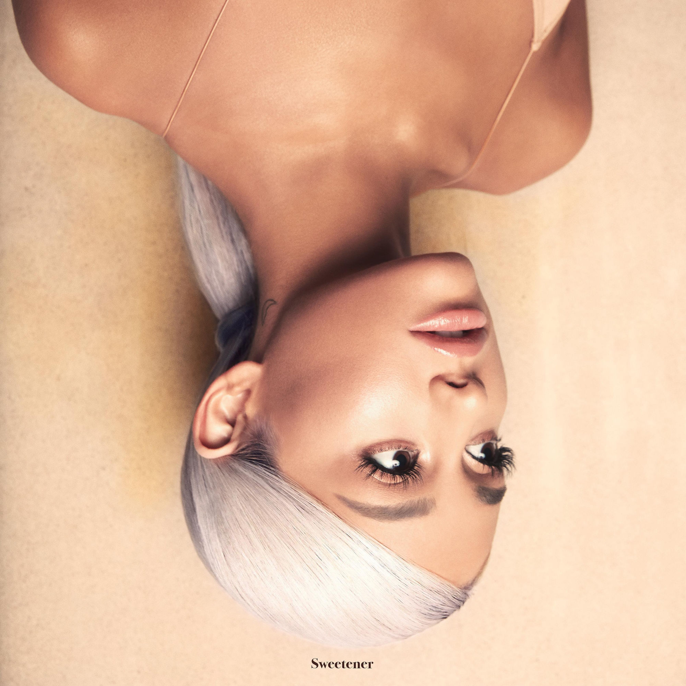

Yeah, yeah, mmm, oh, yeah
Yeah, ooh, ooh, yeah
[Verse 1]
I just got some real good news from work, boy (Issa surprise, surprise)
You can’t imagine what I’m ’bout to say (Issa surprise, surprise)
It’s so hard to hold back, baby (Issa surprise, surprise)
I’m so excited, I can hardly wait (Issa surprise, surprise)
Listen, bae
[Pre-Chorus]
Tonight, I’m a baller, babe (Tonight, I’m a baller, baby)
Even way beneath it, yeah, oh, woah (Even way beneath me)
What else is there to say, boy? (What else is there to say, boy?)
Say, bae, you should play with me, babe
[Chorus]
Yeah, it feels so good to be so young
And have this fun and be successful, yeah
I’m so successful, yeah
And, girl, you too, you are so young
And beautiful and so successful, oh, woah, yeah
I’m so successful
[Verse 2]
This ain’t nothing ordinary for me (Issa surprise, surprise)
We ain’t goin’ to your favorite place (Issa surprise, surprise, yeah, yeah)
You keep asking, “What is so special?” (Issa surprise, surprise)
You really wanna know? You’ll have to wait (Issa surprise, surprise)
[Pre-Chorus]
Tonight, I’m a baller, babe (Tonight, I’m a baller, baby)
Even way beneath it, yeah (Even way beneath me)
What else is there to say, boy? (What else is there to say, boy?)
Say, bae, you should play with me, babe
[Chorus]
Yeah, it feels so good to be so young
And have this fun and be successful, mmm (I, I, I)
I’m so successful
And, girl, you too, you are so young, mm, oh, woah
And beautiful and so successful, woah yeah
I’m so successful, yeah, yeah
[Bridge]
Let me put my hands over your eyes, mmm, yeah, mmm, yeah
(Issa surprise, surprise, Issa surprise, surprise)
Boy, are you ready for your surprise?
(Issa surprise, surprise, Issa surprise, surprise)
Mmm ah, oh, I’ma give it to ya (Mhm)
Mmm ah, oh, I’ma give it to ya (Oh, yeah)
Do you like it, babe? (Do you like it, babe?)
Does it give you chills? (Does it give you chills?)
Does it make you feel cold? Yeah (Does it make you feel?)
[Pre-Chorus]
Oh, oh, oh, woah
Tonight, I’m a baller, babe, mmm, oh (Tonight, I’m a baller, baby)
Even way beneath it, oh, woah (Even way beneath me)
What else is there to say, boy? Oh, woah (What else is there to say, boy?)
Say, bae, you should play with me, babe
[Chorus]
Yeah, it feels so good to be so young
And have this fun and be successful
I’m so successful, yeah
And, girl, you too, you are so young
And beautiful and so successful, yeah
I’m so successful, yeah, yeah